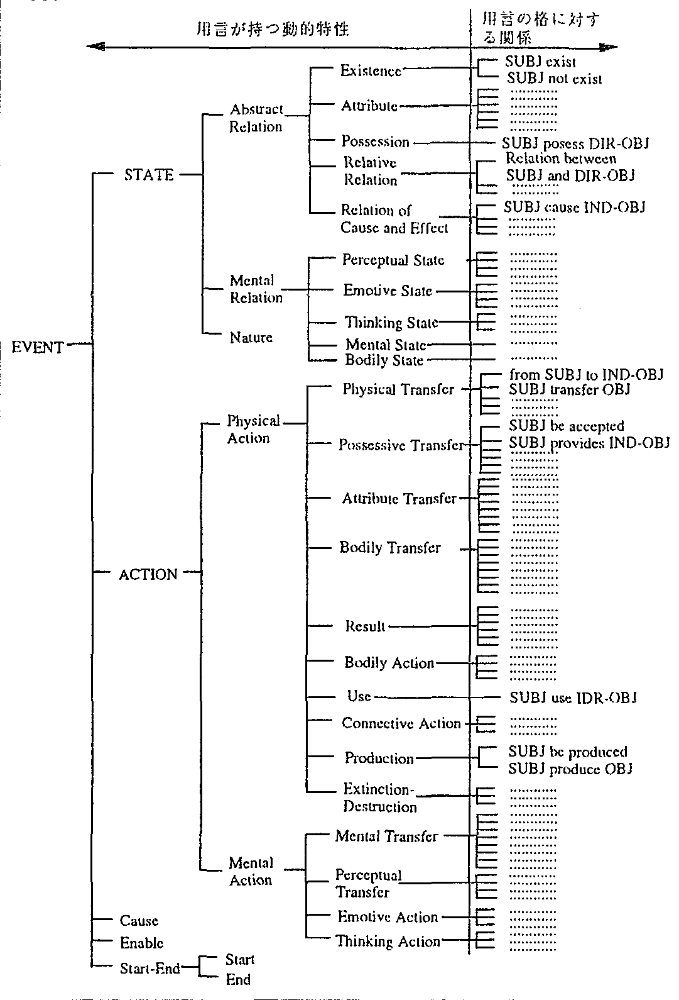

日英機械翻訳システムでの実現を考慮した, 指示対象が文章中に現れない日本語ゼロ代名詞に対する, 語用論的・意味論的制約を用いた照応解析枝術について提案する. 本手法は, 格の意味的制約, 様相表現, 用言意味属性, 接続語の4 種類の語用論的・意味論的制約に着目して, 文章中に指示対象 を持たないゼロ代名詞指示対象を決定し, 適切な英語表現に変換するものである. 本手法を日英翻訳システムALT-J/E上に実現して, 日英翻訳システム評価用例文(3,718文)中に含まれる文章外照応のゼロ代名詞を対象に 本手法の解析精度の評価実験を行った. まず, この文章外照応ゼロ代名詞中, 出現頻度の高い5 種類193 件を人手で分析し 解析ルールを整備し, 解析精度の評価実験を行った結果, 上記4 種類の制約条件でそのすべてのゼロ代名語の指示対象が正しく決定された. その結果を詳細に分析すると, 用言意味属性は, 様相表現と同等以上の効果を持つことが分かった. また, 比較的簡単なルールだけでも, 高い精度で指示対象が決定できることが分かった. さらに, 上記例文中のすベての文章外照応ゼロ代名詞371 件から自動的に照応解析ルールを作成し, ウィンドウテスト, ブラインドテストで解析精度を評価した場合, それぞれ99.2%, 87.6% という高い割合で正しく解析できることが分かった. 以上の結果, 提案した方式の有効性が実証された. 今後, さらに多くの文を対象に解析ルールの整備を進めることにより, 文章外指示対象を持つゼロ代名詞の大半を復元し, 補完できる見通しとなった.
This paper proposes a method to resolve extrasentential references or Japanese zero pronouns suitable for application in generally applicable machine translation systems. This method focuses on semantic and pragmatic constraints such as semantic constraints on the cases, modal expressions, verbal semantic attributes and conjunctions to determine extrasentential antecedents of Japanese zero pronouns. This method is highly effective because the volume of knowledge that must be prepared beforehand is reasonable and its precision of resolution is good. This method was implemented in the Japanese-to-English machine translation system, ALT-J/E. To evaluate the performance of our method, we conducted a window test for 5 types of zero pronouns with extrasentential antecedents (193 instances) in a sentence set for the evaluation of the performance of Japanese to English machine translation systems (3718 sentences). According to the evaluation, extrasentential antecedents could be resolved correctly for all of the zero pronouns examined. By examining the accuracy for various conditions, we found that the verbal semantic attributes were comparatively as effective as modal expressions. By examining the accuracy for rule complexity, we found that this method can achieve high accuracy using relatively simple rules. Furthermore, by testing on an unknown text for all types of zero pronouns with extrasentential antecedents (371 instances) in the sentence set, we found that 87.6% of zero pronouns could be correctly resolved.
自然言語において話者や筆者が伝えたい内容は, 時 間的, 空間的にさまざまな事象が立体的に絡み合って いることが多い. これに対して, 言語は一次元的な表 現形式を持つ表現媒体であるため, 伝えたい内容を単 一の表現や文などで一度に表現することは難しい場合 がある. このような場合, いくつかの表現や文に分け て内容が表現されるため, 言語理解においては, 複数 の表現や文の表す内容の対応関係を理解することが重 要となる.
このような表現対象の対応関係を記述するための代 表的な表現として代名詞による照応表現がある. この
表現は頻繁に使用されるが, また, 同時に, 言語表現 では相手に誤解を生じない場合, 既知の要素は省略さ れる傾向をも持つため, 省略されることも多い. 省略 された代名詞表現は通常ゼロ代名詞と呼ばれ, 計算機 言語理解では, 明示された代名詞と同様, その照応関 係を解析することが重要である.
ところで, このゼロ代名詞の定義に従えば, 話者や 筆者が伝えたい内容のうち, 文中に明示されない照応 表現はすべてゼロ代名詞であることになるから, 計算 機処理において, ゼロ代名詞を含むすべての代名詞に ついてその照応関係を調べることは事実上困難である. このため, 目的に応じて対象を絞ることが必要となる が, 現実に照応解析が必要となる照応表現は, 解析対 象言語の種類やシステムの種類によって異なる. たと えば, 英語では, 代名詞や定冠詞をともなう定表現な ど, 明示された照応表現が頻繁に現れるのに対して, 日本語では, 文脈や常識などによって相手が容易に推 測できる要素は文章上表現しない傾向が強く, ゼロ代 名詞として省略された表現が多い. そのため, 英語解 析では明示された照応表現の解析技術が特に重要であ るのに対して, 日本語解析では, ゼロ代名詞として省 略された照応表現の解析技術がより重要となる. 特に 日英機械翻訳システムにおいては, 日本語表現で省略 された格要素を英語で明示的に訳出する必要がある場 合が多いため, 日本語ゼロ代名詞の照応解析枝術は特 に重要であるといえる.
日本語ゼロ代名詞の照応解析に関しては, 従来 からさまざまな手法が提案されている. たとえば, Kameyama1)やWalkerf2)らは, 中心化アルゴリズム に基づき助詞の種類や共感動詞の有無により文章中 に現れる指示対象を決定する手法を提案した. また, Yoshimoto3)は, 対話文に対して, 文章中に現れる指 示対象については, 主題をベースとして指示対象を同 定し, 文章中に現れない指示対象については, 敬語表 現や speech act に基づき指示対象を同定する手法を 提案した. 堂坂4)は, 日本語対話における対話登場人 物間の待遇関係, 話者の視点, 情報のなわばりにかか わる言語外情報の発話環境を用いて, ゼロ代名詞が照 応する対話登場人物を同定するモデルを提案した.
これらの従来の手法は, 機械翻訳に適用するうえで, いくつかの問題を残している. 第1 の問題は, 汎用性 を重視した方法であるため, 誤った照応関係の判定を おさえるのが因難である点である. すなわち, 機械翻 訳では, 照応解析に失敗し, 誤った要素をゼロ代名詞 の指示対象として補完した場合, 日本文で伝えたい情 報とは異なる内容の英文が生成されるが, このような 誤りは致命的である. このような訳文を生成するより も, そのようなゼロ代名詞は, むしろ無視して訳出す る方が良い. 再現率よりも適合率が重視される. 第2 の問題は, 従来の手法の一部は, 照応解析に常識など の大量な知識を必要とすることである. 翻訳対象分野 を狭い範囲に限定したとしても, これらの方式を実現 するのに必要な量の知識を準備することは容易でない. 第3 の問題は, 肌応関係の確定したゼロ代名詞を表現 上再生する方法の問題である. 機械翻訳システムにお いては, ゼロ代名詞の照応先が決まった後は, それを いかに自然な目的言語の表現に翻訳するかという点が 重要となるが, この問題は検討されていない.
ところで, 日英機械翻訳で照応解析が必要となるゼ ロ代名詞は, 指示対象の種類に着目して, 次の3 種類 に分類することができる.
| (a) | 指示対象が同一文内に存在するゼロ代名詞 | |
| (文内照応) | ||
| (b) | 指示対象が文章中の他の文に存在するゼロ代名詞 | |
| (文間照応) | ||
| (c) | 指示対象が文章中に存在しないゼロ代名詞 | |
| (文章外照応) |
これらのゼロ代名詞のうち, (a) 文内照応と(b) 文 間照応のゼロ代名詞の翻訳の問題については, 最近, 実用的な手法が提案された. まず, (b) では, 用言の 持つ意味を分類し, その語の持つ代表的な意味属性値 により, 語と語や文と文の意味的関係を決定して, 文 章中の他の文内に現れた指示対象を特定する手法が提 案されている5). また(a) では, 接続語, 用言の意味, 様相表現の3 種類の語用論的・意味論的制約を用いて, 同一文内に存在する指示対象を決定する手法が提案さ れている6). これらの方法は, 一般常識などの世界知 識を前提とせず, 使用される情報が言語知識に限定さ れるため, 実用的といえる.
ところで, これらの2 種類のゼロ代名詞は, 文章中 に指示対象が存在する. このため, それを英文に訳出 する際は, 指示対象として特定された表現の持つ情報 を参照し, 訳出すべきゼロ代名詞が置かれる英訳文の 構造上の位置に考慮すれば, 適切な訳語を選択するこ とができる、 これに対して, (c) の文章外照応ゼロ代 名詞は, 文中でその代名詞が単に省略されているだけ でなく, それに対応する指示対象が文書中のどこにも 現れていない表現である、 指示対象は, 文章を構成す る談話の構造や常識等の知識に基づく世界モデルの中 に求めることになる. このように, (c) のゼロ代名詞 の照応関係を決定することは容易でなく, 従来, 機械 翻訳への応用に適した方法はなかった.
ここで, 英語表現の特徴を考えると, 英語表現では, 文法上の要請によって省略できない主語や目的語など に対して, これらの対象を必ずしも具体的に示さず, 抽象的な概念としてとらえて, I, it, they, you など で表現することがある. 日英機械翻訳では, (c) のタ イプのゼロ代名詞は, このような表現に相当すること が多い. また, このような表現では, 一般の名詞は使 用されず, 使用される表現は, 数種類の代名詞による 表現に限定される. したがって, 機械翻訳においても, (c) タイプのゼロ代名詞の場合は, 必ずしも, その指 示対象を特定する必要はなく, 訳出にあたっては, 英 語側の文法的要請に応じて, 数種類の代名詞の中から 文法的, 意味的に適切な代名詞が選択できればよいと 考えられる.
この点に着目して, 本論文では, 英文側からの文法 的な要求条件から訳出する必要のある文章外照応のゼ ロ代名詞(c) に対して, 格要素, 様相表現, 用言意味 属性および接続語の4 種の語用論的・意味論的制約に 基づいてその種類を決定する方法を提案する.
指示対象が文章中にないゼロ代名詞の傾向をつかむ ために, 本章では独立した文(文間文脈情報が得られ ない文) におけるゼロ代名詞を調査した. 調査対象は, 日英機械翻訳システム評価用例文3,718 文7)である. この評価用例文は, 日本語の性質と表現の種類, およ び日本語と英語との相違に基づき体系化された約500 種類の試験項目を評価するために, 実用文中の表現を 抽出して作成された日本語例文である. 個々の文には 模範となる英訳が付与されており, そのほとんどの文 は文脈の情報なしに(一文単独で) 翻訳が可能である (3,718 文中3,704 文) ため, 個々の文を日英機械翻訳 システムで翻訳し, あらかじめ用意された英訳と比較 することでシステムの翻訳機能の評価が行える. また, 個々の例文は自然な日本語文であり広範囲な表現が含 まれているため, これらの例文におけるゼロ代名詞と その指示対象の出現傾向を調査することによって, 同 一文内に指示対象がある場合や, 文中に現れない指示 対象の傾向を把握することが可能と期待できる. さら に, 日本語ゼロ代名詞が英語表現にいかに翻訳されて いるかの情報も得ることができるので, 日英機械翻訳 システム中での実現を目指した日本語ゼロ代名詞照応 解析技術の検討に適した分析が可能となる.
上記の試験文に対して照応解析が必要となるゼロ代 名詞とその指示対象の出現傾向を調査した結果を表1 に示す. 指示対象は出現場所から見て, 同一文内に存 在する場合と, 同一文内に存在しない場合に分かれる. このうち照応要素が同一文内に存在しない場合におけ るゼロ代名詞は, 英語への訳し方から見て, 以下のよ うに分類することができる.
| ゼロ代名詞化 された格要素 |
指示対象の出現場所 | 小計 [件] | ||||||||||||
| 同一文内 | 同一文内になし | |||||||||||||
| は (引用 文内) |
が (埋込 文内) |
を | に | 他 | 受身 | Iかwe | you | 人間 | it | 他 | ||||
| は | 1 | 0 | 0 | 0 | 0 | 0 | 0 | 4 | 0 | 2 | 0 | 0 | 0 | 7 |
| が (埋込文内) (引用文内) |
110 | 2 | 9 | 2 | 0 | 2 | 8 | 144 | 82 | 24 | 28 | 51 | 0 | 462 |
| 3 | 0 | 1 | 0 | 0 | 0 | 0 | 6 | 2 | 0 | 1 | 0 | 0 | 13 | |
| 4 | 0 | 0 | 0 | 0 | 0 | 0 | 0 | 1 | 0 | 1 | 0 | 0 | 6 | |
| を (埋込文内) |
3 | 0 | 0 | 0 | 5 | 1 | 0 | 0 | 0 | 0 | 1 | 7 | 0 | 17 |
| 1 | 0 | 0 | 0 | 0 | 0 | 0 | 0 | 0 | 0 | 0 | 0 | 0 | 1 | |
| に | 1 | 0 | 0 | 0 | 0 | 0 | 0 | 2 | 3 | 8 | 0 | 0 | 1 | 15 |
| の | 0 | 0 | 0 | 0 | 1 | 0 | 0 | 0 | 1 | 0 | 0 | 2 | 0 | 4 |
| 小計 [件] | 154 | 371 | 525 | |||||||||||
調査結果によれば, 全ゼロ代名詞525 件に対して指 示対象が文中に現れないゼロ代名詞が371 件(71%) で最も多い. そのうち, 受動態に変換することによっ てゼロ代名詞の指示対象を認定せずに生成することが 可能となるものは156 件(30%) にとどまる. よって 残りの215 件(41%) のゼロ代名詞は, なんらかの手 段で文章中には現れない指示対象を認定する必要があ る. また, 指示対象が文中に現れないゼロ代名詞を翻 訳する際に, 指示対象を決定し明示しで翻訳すべきか, 受動態に変換することで指示対象を明示せず翻訳すべ きかの判断をする必要がある.
これら371 件のゼロ代名詞を詳細に分析するため に, これらゼロ代名詞のうち出現頻度が特に多いガ格 のゼロ代名詞329 件を調査対象に, これらを含む単文 の特徴を指示対象の種類別に分類した結果を表2に示 す. 本表に示すとおり, ゼロ代名詞を含む単文の特徴 としては, その単文がともなう様相表現☆, 用言の意 味☆☆および接続語☆☆☆の種類を用いた. たとえば, 「運 動会で一等になったときは嬉しくてならなかった」 と いう文では, 動詞「なる」のガ格および動詞「嬉しい」 のガ格がゼロ代名詞となっており, この文の英訳によ ると, ともに“I” が指示対象として翻訳されている. この文の場合, まず前者のゼロ代名詞を含む単文表現 「運動会で一等になったときは」 からは, “過去” の様 相表現「た」, 動詞「なる」 の用言の意味“ガ格の属 性変化” および“同時” の接続語「ときは」 の特徴が 得られ, 後者のゼロ代名詞を含む単文表現「嬉しくて ならなかった」からは, “過度” の様相表現「てならな い」 と“過去” の様相表現「かった」, 動詞「嬉しい」 の用言の意味“ガ格( 人) の感情状態” および“複文 の主文” の特徴が得られる. 本表によると, 指示対象 にかかわらず出現する過去や否定の様相表現などの単 文の特徴を除くと, “I” または“we” が指示対象とな る場合82 件(16%) は, 「〜 したい」 のような希望の 様相表現(8 件) や, 「思う」のような思考動作を示す 用言(15 件) を多くともなっているのに対し, “you” が指示対象となる場合24 件(5%) は, 「〜 ざるをえな い」のような不可避の様相(3 件) や, 「〜 してはなら ない」のような禁止の様相(3 件), 「〜ば」のような順 説仮定の接続語(6 件) をともなう表現が多く存在す る. また, “it” が指示対象となる場合51 件(10%) で は, 用言が状態(10 件) や特質(8 件) を示す場合が 多い. さらに, 受動態に変換する場合144 件(27%) は, 単文となる割合が多い (144 件中107 件).
| ゼロ代名詞化 格要素 | 指示対象 | ゼロ代名詞を含む単文の特徴 | |||||||
| 件数 | 頻度順 | 様相表現 | 用言の意味 | 接続語 | |||||
| 種類 | 件数 | 種類 | 件数 | 種類 | 件数 | ||||
| ガ格 | 受動態 | 144 | 1 | 過去 ( た) | 14 | ガ格がヲ格を 属性変化 | 30 | 単文 | 107 |
| 2 | 可能 (できる) | 13 | ガ格が 思考動作 | 27 | 複文主文 | 16 | |||
| 3 | 断定 (だ) | 13 | ガ格がヲ格をニ格に 精神的移動 | 16 | 連用中止 | 4 | |||
| 4 | 否定 ( ない) | 8 | ガ格(主体)が 身体動作 | 15 | 同時 (と) | 4 | |||
| 筆者/話者(I) または 筆者/話者を 含む集合(we) | 82 | 1 | 過去 (た) | 21 | ガ格(主体) が 思考動作 |
15 | 単文 | 37 | |
| 2 | 否定 ( ない) | 11 | ガ格がカラ格からニヘ格へ 物理的移動 |
10 | 複文主文 | 26 | |||
| 3 | 可能 (できる) | 9 | ガ格(主体) が身体動作 | 8 | 連用中止 | 4 | |||
| 4 | 希望 (たい) | 8 | ガ格が 感情動作 | 7 | 逆接仮定 (ても) | 3 | |||
| 読者または 聴者(you) | 24 | 1 | 否定 (ない) | 5 | ガ格(人/動物)が 身体動作 | 5 | 単文 | 9 | |
| 2 | 不可避 (ざるをえない) |
3 | ガ格が 感情動作 | 3 | 順接仮定 (ば) | 6 | |||
| 3 | 禁止 (ならない) | 3 | ガ格(主体)が 身体動作 | 2 | 複文主文 | 5 | |||
| 4 | 断定 (だ) | 3 | ガ格(主体)が 思考動作 | 2 | ・・・・・ | ・・・ | |||
| 人間 | 28 | 1 | 否定 (ない) |
8 | ガ格がヲ格をニ格に 精神的移動 |
3 | 複文主文 | 11 | |
| 2 | 断定 (だ) | 5 | ガ格がカラ格からニヘ格へ 物理的移動 | 3 | 単文 | 7 | |||
| 3 | 義務 (ベき) | 3 | ガ格が思考動作 (検討する) | 3 | 継続中 (つつ) | 2 | |||
| 4 | 可能 (できる) | 3 | ・・・・・ | ・・・ | 逆接仮定 (ても) | 2 | |||
| それ(it) | 51 | 1 | 断定 (だ) | 23 | ガ格の状態 (奇麗だ) | 10 | 単文 | 21 | |
| 2 | 過去 (た) | 7 | ガ格(主体以外) の特質 (安い) | 8 | 複文主文 | 16 | |||
| 3 | 丁寧 (です) | 6 | 時刻 (時間だ) | 6 | 譲歩 (のに) | 5 | |||
| 4 | 推量 (だろう) |
6 | ガ格( 人/動物)の 知覚状態 | 5 | 同時 (と) | 3 | |||
このように, 指示対象の種類に応じてゼロ代名詞を 含む単文の用言の意味属性やその単文にともなう様相 表現, 接続語が異なるので, 指示対象が文章中に現れ ないゼロ代名詞を解析するのに, 様相表現や用言の意 味, 接続語の種類を用いることが有効だと推定できる.
2 章で得られた結果を基に, 指示対象が文章中にな いゼロ代名詞の解析手法について提案する.
指示対象が文章中に現れないゼロ代名詞を解析する 手法としては, 格要素への意味的制約条件を用いて, 制約となる意味属性に応じて補完要素を推定する手法 が考えられる. しかし, 格要素の意味的制約は広がり を持つ場合が多くあり, それだけでは, 指示対象は特 定できない. たとえば, 図1に示すような日本語動詞 「行きます」 に対する日英翻訳システムで用いられる 日英構造変換辞書の例を見てみる. この例では, 「N1 ( 主体or 乗り物or 動物) が行きます」 という日本語 表現に対応する適切な英語表現が“N1 go” であるこ とを示す. この動詞「行きます」のN1 が省略された 場合には, 意味的制約である“主体”, “乗り物”, “動 物” のカテゴリに応じた指示対象を決定しようとする. しかしこの例の場合は, ガ格であるN1 に複数の意味 的制約が存在するため, 指示対象を一意に決定するこ とはできない.
|
図1 のパターンのような日英構造変換辞書におけ る格に対する制約条件は, あくまでもそれが日本語表 現を英語表現に変換する際の訳し分けに用いられるた め, 格要素となる語の意味によって用言の訳語がこま かく変化する場合には, 格要素に対して詳細な意味属 性が制約として付与されているが, その多くは抽象的 な意味情報が付与されている. したがって, 格に対す る意味的な制約条件を用いて, ゼロ代名詞の文章中に 現れない指示対象を推測する場合には, その要素が一 意に決まらない場合が多い. また, たとえ意味的制約 により指示対象の意味が一意に決まる場合でも, 具体 的な指示対象が一意に決まらない場合もある. たとえ ば, ある格要素への意味的制約が“人” の場合, 指示 対象の意味は一意に決まるが, 具体的に指示対象が話 者や筆者(I) なのか読者や聴者(you) なのかそれ以 外の“人” なのかが決まらない.
そこで, 2 章での調査結果を検討すると, 格への意 味的制約だけでなく, 用言の意味や様相表現, 接続語 のタイプもゼロ代名詞の文章外指示対象推定に用いれ ば, より正確に補完要素を推測できると予想される. たとえば, 図1 の日本語表現においても, 用言「行き ます」の用言の意味属性は“N1 の移動” を示し, 動詞 「行きます」 は動詞「行く」の丁寧表現であることか ら, 話者もしくは筆者が行くことをだれかに伝えよう とする表現であることが推測され, ゼロ代名詞N1 の 指示対象は話者もしくは筆者である“I” と解析できる.
2 章の調査結果の分析によると, 様相表現や用言意 味属性, 接続語のタイプがゼロ代名詞の文章外指示対 象を決定するのに有効であることが期待できる. 本節 では, 2 章で調査した例文を詳細に検討することによ り得られた, 様相表現や用言意味属性, 接続語の3 種 類による文章外指示対象を決定するための語用論的・ 意味論的制約について述べる.
ある種の様相表現をともなう文では, 様相表現がゼ ロ代名詞の文章外指示対象を決定するうえで最も強力 な制約となると期待される. たとえば, ガ格(格助詞 ガをともなう格要素) がゼロ代名詞化している場合に は, 様相表現「〜 したい (φ want to 〜 )」 (希望) や 「〜 してほしい (φ want φto 〜 ) 」 ( 三人称希望・使 役) をともなうと, 指示対象は“I” になり, 様相表現 「〜 してはいけない(φ must not 〜 )」(禁止) や「〜 するべきだ(φ should)」(義務) をともなうと, 指示 対象は“you” になるといえる. このように, 文脈によ り文章内の要素が指示対象となる場合以外で様相表現 を持つ文では, これらのゼロ代名詞はそれによって一 意に指示対象が推定できる.
用言意味属性による制約は大きく以下の2 種類に分 かれる.
(1) 用言の種類による制約
用言「 もらう (get)」「やる (give)」のような受給表 現, 「行く (go)」や「来る(come)」のような移動表現 等は, ゼロ代名詞が存在する場合には様相表現がとも なわなくても文章外指示対象が決まる. たとえば, ガ 格がゼロ代名詞化された場合には, 「もらう (get)」の 指示対象は“I” になり, 「来る (come)」の指示対象は “I” 以外( たとえば“you” ) となるといえる. これら 用言は, 箪者や話者とガ格となる要素との相対的関係 ( たとえば共感度8)や筆者の純張りの内側か外側か9) ) を暗に示しており, これらの性質により文章外指示対 象が推定できる.
(2) 用言の種類と様相表現による制約
用言の種類のみや様相表現の種類のみでは指示対象が 決まらなくても, 用言の種類と様相表現の双方から指 示対象が決まる場合がある. たとえば, 「本を読んだ」 という表現では, ガ格がゼロ代名詞化しているが, 指 示対象が同一文内にも他の文内にも存在しないとする と☆, この表現は話者または筆者の経験を述べたもの と考えられるので, 指示対象としては“I” が適切であ る. このように動作を示す動詞+ 「〜 た (過去) 」の ガ格がゼロ代名詞化された場合, その指示対象は“I” と推定される. また同様に, 動作を示す動詞+ 「〜 だ ろう (断定+推量) 」のガ格がゼロ代名詞化された表 現では, 話者/筆者が聴者/読者の行為を推量する表現 であると考えられるので, その指示対象は“you” と推 定される. このように, 用言の種類と様相表現の種類 によっても文章外指示対象が決められる場合がある.
接続語の種類によっても, ゼロ代名詞の文章外指示 対象が決まる場合がある. この接続語の種類による制 約は大きく以下の2 種類に分かれる、
(1) 接続語のタイプによる格の共有による制約
南12)や田窪13)らが提案しているとおり, 日本語の接 続語には, 接続語を挟んだ前後の単文において, 1 つ の格要素を両方の単文の格要素として共有することを 強制するものがある. たとえば, 南は, 日本語接続語 をA, B, C の3 種類に分類し, 主題ハ格も助詞ガ格 も共有するような「つつ」や「ながら」のような継続 を示す接続語をA類, ハ格は共有するが, ガ格は共有 しないような「ので」や「たら」のような条件を示す 接続語をB類, ハ格もガ格も共有しないような「し」 や「て」のような接続語をC類と呼んだ. この分類に よるとA 類の接続語をともなう複文において, この 接続語をはさんだ2 種類の単文のガ格がともにゼロ代 名詞化されている場合には, 3.2.1 項や3.2.2 項の制 約によって片方のガ格の指示対象が決まった場合, 他 方の指示対象もそれと同一であると推定できる. この ような, 接続語の種類による格要素の特徴を, 指示対 象の決定に活用することができる.
(2) 接続語と用言意味属性, 様相表現による制約
ゼロ代名詞を含む文中の接続語の種類と用言意味属性, 様相表現の種類によって, 文が表現する意味が特定で き, それによって指示対象が決められる場合がある. たとえば, 「床屋に行かないと髪がぼうぼうになる」で は用言「行かない」のガ格がゼロ代名詞化されている が, 文内文間肌応解析終了後で指示対象が同一文内に も文章中の他の文内にも存在しないことが判明してい る時点では, 指示対象は“you” となる. これは, 「あ なたがしないとある状態になる」 と話者/筆者が忠告 するタイプの表現である. このタイプの表現は, 接続 語は「と」であること, 従文はガ格がゼロ代名詞化さ れ, 動作動詞で否定表現をともなうこと, 主文は属性 を示す表現で状態変化を示す様相表現「になる」 をと もなうことを条件に特定することができ, 指示対象が 決定できる.
3.1 節や3.2 節で示した議論を基に, 文章外に指 示対象を持つゼロ代名詞の解析アルゴリズムについて 提案する. ただし, ここでは, 日本文を英訳するうえ で必須要素となるゼロ代名詞のみを対象とする. 処理 アルゴリズムは, 以下のとおりである. 以下に示した とおり, 3.2 節で提案した手法は, 指示対象が同一文 内および文章中の他の文に存在するゼロ代名詞の照応 解析が終了した時点で適用される. よって, 文章外照 応解析用ルールは, 文章外に指示対象を持つゼロ代名 詞のみが現れることを前提に作成する.
| ス | テップ1 ゼロ代名詞を検出する. (たとえば, 文献5)の手法で検出する) |
| もし検出されれば, 同一文内および他の文に指示対象が存在するか調査する (たとえば, 5)や6)の手法で調査する). | |
| 存在し, 照応解析が終了すれば解析終了. | |
| ス | テップ2 同一文内および他の文に指示対象が存在しなければ, ゼロ代名詞が支配する用言の用言意味属性, 様相表現および接続語の種類によって, 文章外照応解析を行う. |
| 照応解析の条件は表3に示すとおりである. ここに示した条件は, 2 章での調査対象文のうち, 英語表現として訳出することが必要なため文章外照応解析が必要で, 出現頻度の高い5 種類のゼロ代名詞193件(ガ格のすべておよび指示対象が “you”となるニ格) を分析して, 人手で作成したものである. | |
| 文章外指示対象を決定する際には, この条件のみではなく, 用言がゼロ代名詞に課す意味的制約をも満たすかも検証する. | |
| 指示対象が決定すれば解析終了. | |
| ス | テップ3 指示対象が決定できない場合, 用言がゼロ代名詞に課す意味的制約により指示対象を推測. |
| また, 受動態に変換可能な場合は受動態に変換し, 解析終了. |
本アルゴリズムで照応解析条件として用いる様相表 現, 用言意味属性および接続語のタイプは, 個々の様 相表現, 用言, 接続語そのものを用いず, それらを意 味に応じて分類した属性体系の中の属性値を用いてい る (様相表現: 134 種類, 用言: 107 種類, 接続語: 56 種類). このように, 個々の表現の持つ意味を分類 して, 表現の持つ代表的属性値を照応解析条件として 利用することによって, 個々の表現レベルでルールを 記述した場合に起こる知識量の爆発を避けることがで きると期待される. また, 個々の表現をルールに記述 した場合には, そのルールが有効となる範囲はその表 現に限られるが, 表現の持つ代表的属性値で記述した 場合には, 同じ属性値を持つ他の表現に対しても有効 になるため, 解析条件に代表的属性値を用いることに よって, 守備範囲が広く汎用的なルールが書けること が期待される.
| ゼロ代名詞出現場所 | 条件 | 指示対象 | 考察 |
| が格 | 様相: 希望(〜したい) | I or we | 話/著者が希望する |
| 様相: 三人称希望, 使役(〜してほしい) | 話/著者が聴/読者に希望する | ||
| 様相: 勧誘(〜しましょう) | 動誘するのは話/著者 | ||
| 用言: Action 配下の属性+様相: 丁寧(〜します) | 発話者の待遇関係による | ||
| ・・・・・・・・・・・・・・ | ・・・・・・・・・・・・・・ | ||
| 様相: 禁止(〜してはいけない) | you | 話/著者が聴/読者の行動を禁止する | |
| 用言: Action 配下の属性+様相: 義務(〜ベき) | 話/著者が聴/読者の活動を義格化 | ||
| ・・・・・・・・・・・・・・ | ・・・・・・・・・・・・・・ | ||
| 用言: Bodily Action Thinking Action Ernotive Action Emotive State Bodily Transfer |
人 (I, we, you, ...) | 人しか動作しえない用言, 感情をしめす用言が出現すると 文脈がないと人の解釈がもっともらしくい | |
| ・・・・・・・・・・・・・・ | ・・・・・・・・・・・・・・ | ||
| 用言: 名詞述語文で名詞の意味が抽象 | it | 抽象概念の代名詞はit が適切 | |
| 用言: Attribute Persceptual State | 寒い, 暑いなど気候を示す語 | ||
| ・・・・・・・・・・・・・・ | ・・・・・・・・・・・・・・ | ||
| に格 | 様相: 三人称希望, 使役(〜してほしい) | you | 話/著者が聴/読者に希望する |
| ・・・・・・・・・・・・・・ | ・・・・・・・・・・・・・・ |
3 章で提案した文章外照応解析の方法を, 日英機械翻 訳システムALT-J/E の上に実現し, 作成したルール が整合性を保ちつつ正しい解析結果を与えるか, ルー ルは作成のための労力は少なく済むかの観点から, 次 の2 種類の評価実験を行った.
個々の実験条件は以下のとおりである.
(1) 評価の対象
日英機械翻訳システム評価用例文3,718 文中のゼロ代 名詞525 件のうち, 文章外照応解析の必要で, 人手に よる照応解析ルールの作成できるほどの件数が出現し た以下の5 種類のゼロ代名詞193 件を評価の対象と した.
(2) 照応解析ルール
上記193 件のゼロ代名詞に対して, 3 章の方法で, 人 間が分析することにより, 様相表現, 用言意味属性, 接続語の属性値を用いて作成した表3 に示す53 件の 規則を使用した☆1.
(3) 用言意味属性の体系
図2に示すような用言の意味属性(107 分類) を, 日 英翻訳システムALT-J/E の日英構造変換辞書(約 15,000 パターン) に対して付与し, それを使用し た10),11).
|
 |
(4) 評価項目
解析規則の種類と解析精度の関係を調べるため, 以下 の2 項目に分けて評価した.
| (a) | 照応解析のための制約条件と解析精度の関係 | |
| 格, 様相表現, 用言意味属性, 接続語に関する4種類の制約条件と解析精度の関係を評価した. 本調査により, 人間がルールを作成した場合には, どの条件が照応解析に有効に働くかを評価した. | ||
| (b) | 照応解析ルールの複雑さと解析精度の関係 | |
| 照応解析ルールの複雑さを定式化し, それと解析精度の関係を求めた. 本調査により, ルールの単純さとルールのカバー範囲の広さ, すなわち汎用性の関係を評価した☆2. |
(5) 解析成功の条件
本評価では, ゼロ代名詞の指示対象としてただ1 つの 適切な英訳語が特定できた場合を正解とした☆3.
(1) 評価の対象
日英機械翻訳システム評価用例文3,718 文中のゼロ代 名詞525 文のうち, 指示対象が文内に存在しないすべ てのゼロ代名詞371 件を評価の対象とした.
(2) 照応解析ルール
上記371 件のゼロ代名詞に対して, 3 章で論じた様相 表現, 用言意味属性, 接続語の3 種類の属性値を, 2.2 の特徴分析と同様に, そのゼロ代名詞を含む日本語単 文の解析結果より自動抽出して, それらを解析条件と した. 同じ属性からなる解析条件に複数の指示対象が 現れた場合は, 同じ条件中最も頻度の高い指示対象を その解析条件で決める指示対象としてルール化した. たとえば, 解析条件として“A” という様相属性をと もなう単文が含むガ格のゼロ代名詞のうちで, “I”が 指示対象となる場合が5 件, “you” が指示対象となる 場合が3 件存在した場合, “A” の様相属性が現れる とガ格のゼロ代名詞の指示対象に“I” を選択する照応 解析ルールが作成される. なお, 本評価実験において は, 用言による格への意味的制約の条件は利用せず評 価した☆4.
(3) 評価項目
解析規則の種類と解析精度の関係を調べるため, 様相 表現, 用言意味属性, 接続語それぞれを単独で照応解 析ルールを自動作成した場合, 上記3 種類のうち2 種 類の条件を組み合わせて照応解析ルールを自動作成し た場合, 3 種類すべての条件を組み合わせて照応解析 ルールを自動作成した場合の計7 種類のルールによる 評価実験を行った. また, 解析精度の絶対評価を行う ために, 上記の条件はまったく用いず, 1 種類の格に 出現するゼロ代名詞において, 単に頻度の最も高いも のを指示対象とした場合の解析精度も調査した. また, これと同様に, 上記を条件はまったく用いず, 1 種類の 格に出現するゼロ代名詞における指示対象の頻度をも とに重み付けして, 無作為に指示対象を決定した場合 の解析精度も調査した. この評価では, たとえばある 格のゼロ代名詞の指示対象として“I” が3 件, “you” が2 件出現した場合, 頻度の最も高いものを指示対 象に決定した場合に正解率は60% (＝ 3/5) になるの に対し, “I” を3/5 の確率で, “you” を2/5 の確率で 無作為に指示対象を決定した場合の正解率は52% (＝ 3/5 * 3/5 +2/5 * 2/5) となる.
なお, 個々の評価実験では, 以下の2 種類の方法で解 析精度を計算した.
| (a) | ウィンドウテスト 371 件すべてのゼロ代名詞と そのゼロ代名詞を含む単文の解析結果をルール自 動作成のためのデータとして活用して, 解析精度 を評価した. これにより, 本手法の条件を用いた 場合の限界的性能の評価を試みた. | |
| (b) | ブラインドテスト 371 件のゼロ代名詞のうち, 1 件を取り除きそれをルール自動作成のためのデー タとして活用し, そのルールを用いて取り除かれ た1 件のゼロ代名詞の指示対象が正しく決まるか を調査した. この実験を371 件すべてのゼロ代名 詞について繰り返し, 正しい指示対象が決まった ゼロ代名詞の割合を解析精度とした. これにより, 本手法の条件を用いた場合の現実的性能および作 成されたルールの汎用性の評価を試みた. |
(4) 解析成功の条件
自動作成したルール中に指示対象を正しく決定する ルールが存在した場合を正解とした☆.
(1) 照応解析の条件と解析精度の関係
照応解析条件と解析精度の関係を調べるために, 3 章 で提案した手法の解析精度を次の4 種類の条件で評価 した.
表4に照応解析条件と解析精度の関係を示す. この表 から, 3 章に示す条件をすべて用いることにより, 個々 のルールが解析対象としたゼロ代名詞のみに適合し, 193 件すべてのゼロ代名詞の文章外照応解析がルール の不整合なしに正しく行われたことが分かる. また, 格への意味的制約に加えて, 様相表現, 用言意味属性 の制約条件を順に追加したとき, 様相属性を追加した 場合よりも用言意味属性の制約条件を追加した場合の 方が解析精度が向上する割合が大きい( それぞれ41 件, 21% と49 件, 20%) ことから, 本論文の手法で 新たに導入した用言意味属性が, 様相表現の使用以上 の効果を持つことが分かる. さらに, 接続語以外の単 文内で記述できる解析条件だけを用いても, 82%の解 析精度が得られることが分かる.
| ゼロ代名詞出現場所 | 指示対象 | 解析条件 | ||||
| 格への意味制約 | +様相表現 | +用言意味属性 | +接続語 | |||
| が格 | I or we | 21% (17) | 50% (+29%) (41 (+24)) |
88% (+38%) (72 (+31)) | 100% (+12%) (82 (+10)) | |
| you | 0% (0) | 50% (+50%) (12 (+12)) |
67% (+17%) (16 (+4)) | 100% (+33%) (24 (+8)) | ||
| 人 | I | 0% (0) | 0% (0) |
67% (+67%) (8 (+8)) | 100% (+33%) (12 (+4)) | |
| you | 0% (0) | 0% (0) |
46% (+46%) (6 (+6)) | 100% (+54%) (13 (+7)) | ||
| one | 0% (0) | 0% (0) |
0% (0) | 100% (+100%) (3 (+3)) | ||
| 小計 | 0% (0) | 0% (0) |
50% (+50%) (14 (+14)) | 100% (+5O%) (28 (+14)) | ||
| it | 100% (51) | 100% (+0%) (51 (+0)) |
100% (+0%) (51 (+0)) | 100%(+0%) (51 (+0)) | ||
| に格 | you | 0% (0) | 62% (+62%) (5 (+5)) |
62% (+0%) (5 (+0)) | 100% (+38%) (8 (+3)) | |
| 計 | 35% (68) | 56% (+21%) (109 (+41)) |
82%(+26%) (158 (+49)) | 100% (+18%) (193 (+35)) | ||
(2) 照応解析ルールの複雑さと解析精度の関係
照応解析ルールの複雑さに対する解析精度を検討する ために, 3 章で提案した手法の解析精度をルールの複 雑さに応じて評価した. ここで, 照応解析ルールの複 雑さC は, 用いた制約の数に応じて次の式のように 様相表現, 用言意味属性に対する条件があるとそれぞ れ1 点, 接続語に対する条件があると2 点とし, その 積算を複雑さとした.
| C ＝ | 様相表現による制約の数*1 | |
| + 用言意味属性による制約の数*1 | ||
| + 接続語による制約の数*2 |
接続語の複雑さを2 点としたのは, 接続語は2 つの単 文両方に対する制約として機能するためである. この 計算によると, たとえば, 接続語の条件があり, 主文 に用言意味属性, 従文に対して様相表現と用言意味属 性の条件がある場合には, 様相表現1点*1 + 用言意 味属性1点*2 + 接続語2点*1 の計算により複雑さ は5となる.
表5に照応解析ルールの複雑さと解析精度の関係を示 す. この結果によると, 193 種類のゼロ代名詞を照応 解析するために用いられたルール数は53 種類であっ た. また, 複雑さが3 以下のルール(37 種類) のみを 用いた場合の解析精度は170 件88%, 4 以下のルール (43 種類) のみを用いた場合は182 件94% と, 簡単な ルールだけでも, 個々のルールが解析対象としたゼロ 代名詞のみに適合してルール間の不整合を起こさずに 高い精度が得られることが分かった. この結果から, 様相表現, 用言意味属性, 接続語の属性値を用いて文 章外照応解析を行うことにより, 比較的単純なルール だけでも広範囲なゼロ代名詞解析することができ, 汎 用的なルールが作成できることが分かった.
| 解析条件 | ルールの複雑さ | ルール数 | 解析精度 | ||
| 様相表現 | 用 言意味属性 | 接統語 | |||
| 0 | 0 | 0 | 0 (格への意味制約のみ) | 0 | 35% (68) |
| 1 | 0 | 0 | 1 | 11 (+11) | 56% (+21%) (109 (+41)) |
| 0 | 1 | 0 | 1 | 13 (+2) | 58% (+2%) (111 (+2)) |
| 1 | 1 | 0 | 2 | 30 (+17) | 82% (+24%) (158 (+47)) |
| 0 | 0 | 1 | 2 | 31 (+1) | 82% (+0%) (159 (+1)) |
| 1 | 0 | 1 | 3 | 32 (+1) | 83% (+1%) (101 (+2)) |
| 0 | 1 | 1 | 3 | 37 (+5) | 88% (+5%) (170 (+9)) |
| 1 | 1 | 1 | 4 | 38 (+1) | 90% (+2%) (174 (+4)) |
| 0 | 2 | 1 | 4 | 43 (+5) | 94% (+4%) (182 (+8)) |
| 2 | 1 | 1 | 5 | 44 (+1) | 95% (+1%) (183 (+1)) |
| 1 | 2 | I | 5 | 51 (+7) | 99% (+4%) (191 (+8)) |
| 2 | 2 | 1 | 6 | 53 (+2) | 100% (+1%) (193 (+2)) |
指示対象が文内に存在しないすべてのゼロ代名詞 371 件を調査対象に, これらゼロ代名詞を含む単文を 解析した結果得られる様相表現, 用言意味属性および 接続語の属性値を解析条件として照応解析ルールを 自動作成し, 解析精度を評価した. 照応解析ルールの 自動作成に用いる解析条件の種類と解析精度の関係を 表6に示す. この表から, 3 章に示す条件をすべて用 いて照応解析ルールを自動生成した場合, ウィンドウ テストで99.2%, ブラインドテストで87.6% と高い解 析精度が得られることが分かった. また, 個々の条件 を単独で用いた場合は, 様相表現, 用言意味属性, 接 続語の順で, 文章外に指示対象を持つゼロ代名詞の照 応解析に有効になることが分かった. さらに, 様相表 現と用言意味属性だけを条件に用いた場合でも, ウィ ンドウテストで95.2%, ブラインドテストで81.7% と 高い解析精度が得られることから, 4.2.1 項の人手作 成ルールの評価結果と同様に, 2 種類の条件を利用す ることが文章外照応ゼロ代名詞の照応解析に最も有効 であることが分かった.
| 解析条件 | 解析精度 | |
| ウィンドウテスト | ブラインドテスト | |
| 様相表現のみ | 74.9% 278件 | 64.2% 238件 |
| 用言意味属性のみ | 70.9% 263件 | 52.6% 195件 |
| 接統語のみ | 55.0% 204件 | 48.8% 181件 |
| 様相表現と用言意味属性 | 95.2% 353件 | 81.7% 303件 |
| 様相表現と接続語 | 90.3% 335件 | 79.5% 295件 |
| 用言意味属性と接続語 | 87.9% 326件 | 68.2% 253件 |
| 様相表現, 用言意味属性と接続語 | 99.2% 368件 | 87.6% 325件 |
| 頻度情報のみ(最高頻度条件) | 46.4% 172件 | 46.1% 171件 |
| 頻度情報のみ(頻度重み付け無作為方式) | 31.8% 117.9件 | 30.6% 113.5件 |
以上の結果から, ブラインドテストにおいても3 章 に示す条件が文章外照応ゼロ代名詞の照応解析に有効 であることが示された. これにより, 本論文で提案し た照応解析条件を用いて照応解析ルールを蓄積するこ とによって, ルール作成に利用しなかった文中のゼロ 代名詞の大半が解析できる見通しを得た.
本論文では, 日英機械翻訳システムでの実現を考慮 した, 語用論的・意味論的制約を用いた日本語ゼロ代 名詞の文章外照応解析手法を提案した. 本手法は, 格 の意味的制約, 様相表現のタイプ, 用言意味属性, 接 続語のタイプによりゼロ代名詞の文章中に現れない指 示対象が決まるという語用論的・意味論的な制約に着 目し, 文の表現のタイプに応じて文の意味を決定し, 指示対象を決定するものである. 本手法を日英翻訳シ ステムALT-J/E 上に実現して, 日英翻訳システム評 価用例文(3,718 文) 中のゼロ代名詞を有する文を対象 に, 肌応解析ルールを人手で整備した状態で性能評価 を行った. 本標本実験によると, 英語表現で訳出が必 要で頻度の高い5 種類の文章外照応ゼロ代名詞 (193 件) のすべてが正しく照応解析されることが分かった. 本評価実験の照応解析条件と解析精度との関係の分析 によると, 用言意味属性の制約は, 様相表現と同等以 上の効果(21%向上に対して26%向上) を持つことか ら, 用言意味属性の導入は有効であることが分かった. また, 照応解析ルールの複雑さと解析精度との関係の 分析によると, 比較的簡単なルールだけでも, ルール 間の不整合を起こさずに高い解析精度(複雑さ3 以下 のルールで88%) が得られることが分かった. さらに, 上記例文中のすべての文章外照応ゼロ代名詞371 件か ら自動的に照応解析ルールを作成し, ウィンドウテス ト, ブラインドテストで解析精度を評価した場合, そ れぞれ99.2%, 87.6% という高い割合で正しく解析で きることが分かった. 以上の結果, 語用論的. 意味論 的制約を用いた本手法の有効性が実証され, これらの 制約を用いたルールを蓄積することによって, 補完す べき要素が文中に現れない省略格要素の大半が復元で きるという見通しを得た.
今回の実験では, 日英機械翻訳システム評価用例文 を対象に評価したが, 今後は, 本手法で提案した4 種 類の制約を用いた照応解析ルールをより多く蓄積し, さまざまな文種の例文を用いてブラインドテストによ る評価を行っていきたい. また, 本論文の評価で行っ た照応解析ルールの自動作成手法をより発展させると ことにより, 精度が高く有効な照応解析ルールを自動 的に獲得する手法の検討も行っていく予定である.
本研究を進めるにあたりご指導いただいた河 岡司同志社大学教授, 松田晃一NTT コミュニケーショ ン科学研究所所長に感謝いたします. また, 日頃熱心 に討論していただくNTT コミュニケーション科学研 究所知識処理研究部翻訳処理研究G の皆様に感謝い たします.
| 中岩 浩巳 (正会員) 1985 年法政大学工学部電気工学科卒業. 1987 年名古屋大学大学院工学研究科電気系専攻博士前期課程修了. 同年日本電信電話(株) 入社. 1995 年から1996 年にかけて英国マンチェスタ理工科大学(UMlST) 客員研究員. 現在日本電信電話(株) コミュニケーション科学研究所主任研究員. 日英機械翻訳技術, 特に機械翻訳における文脈処理技術の研究に従事. 著書「日本語語彙大系」(岩波書店, 共編). 人工知能学会, 言語処理学会, ACL各会員. |
| 白井 諭 (正会員) 1978 年大阪大学工学部通信工学科卒業. 1980 年同大学院博士前期課程修了. 同年日本電信電話公社入社. 以来, 日英機械翻訳を中心とする自然言語処理システムの研究開発に従事. 現在, NTT コミュニケーション科学研究所主幹研究員. 1995 年日本科学技術情報センタ賞(学術賞), 同年人工知能学会論文賞受賞. 著書「日本語語彙大系」(岩波書店, 共編). 電子情報通信学会, 言語処理学会各会員. |
| 池原 悟 (正会員) 1967 年大阪大学基礎工学部電気工学科卒業. 1969 年同大学院修士課程修了. 同年日本電信電話公社に入社. 数式処理, トラフィック理論, 自然言語処理の研究に従事. 1996 年スタンフォード大学客員教授. 現在, 鳥取大学工学部教授. 工学博士. 1982 年情報処理学会論文賞, 1993年同研究賞, 1995 年日本科学技術情報センタ賞(学術賞), 同年人工知能学会論文賞受賞. 著書「日本語語彙大系」(岩波書店, 共編). 電子情報通信学会, 人工知能学会, 言語処理学会各会員. |